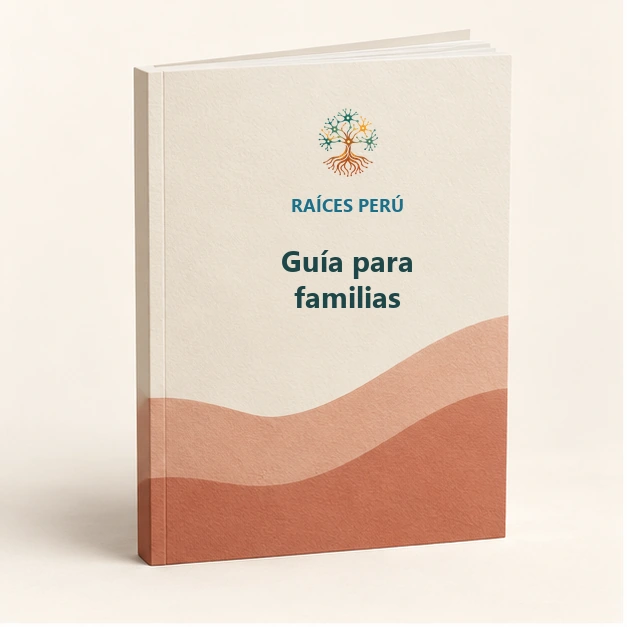
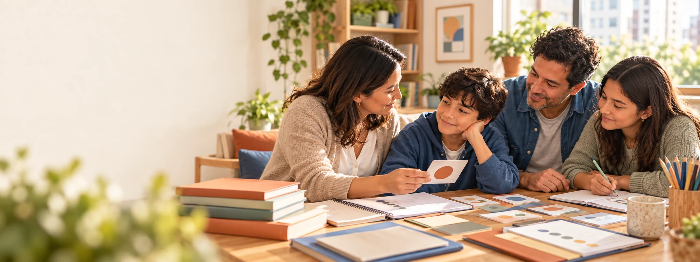
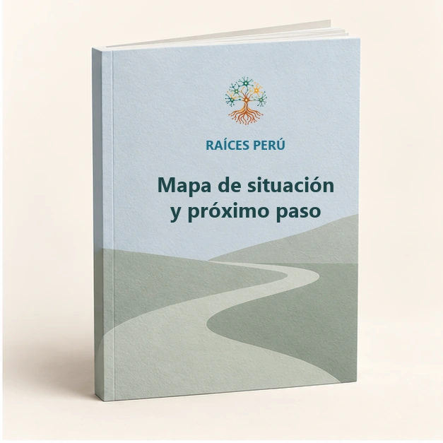
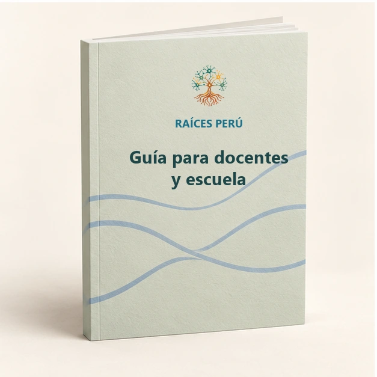
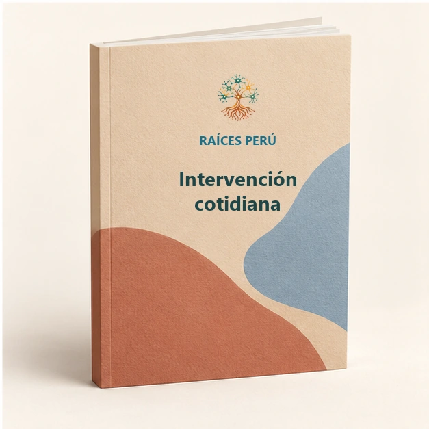

Guías para familias
Organización de información, preparación de citas, comunicación con la escuela y definición de próximos pasos.
 RAÍCES PERÚFamilias y neurodiversidad
RAÍCES PERÚFamilias y neurodiversidadMateriales Raíces
Estamos desarrollando materiales que traducen necesidades reales en apoyos claros. Todavía no ofrecemos descargas: cada pieza debe completar su revisión editorial, científica, ética y de accesibilidad.


Organización de información, preparación de citas, comunicación con la escuela y definición de próximos pasos.

Fichas y mapas para comprender situaciones, formular posibilidades y revisar lo observado.

Recursos para preparar reuniones, mejorar la comunicación y organizar apoyos sin sustituir decisiones institucionales.

Actividades originales con lenguaje, dificultad y apoyos ajustados a una necesidad y un contexto concretos.
Cómo creamos
Biblioteca privada
Los libros y manuales de terceros que utiliza la fundadora son materiales privados adquiridos para acompañar a su hijo. Raíces puede estudiar patrones generales de claridad y experiencia, pero no copia, vende, regala ni redistribuye su contenido.